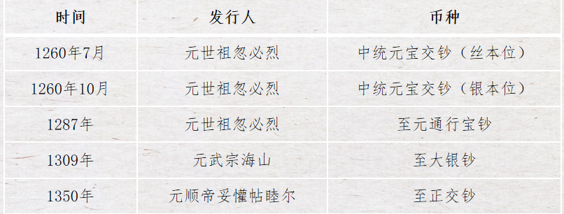
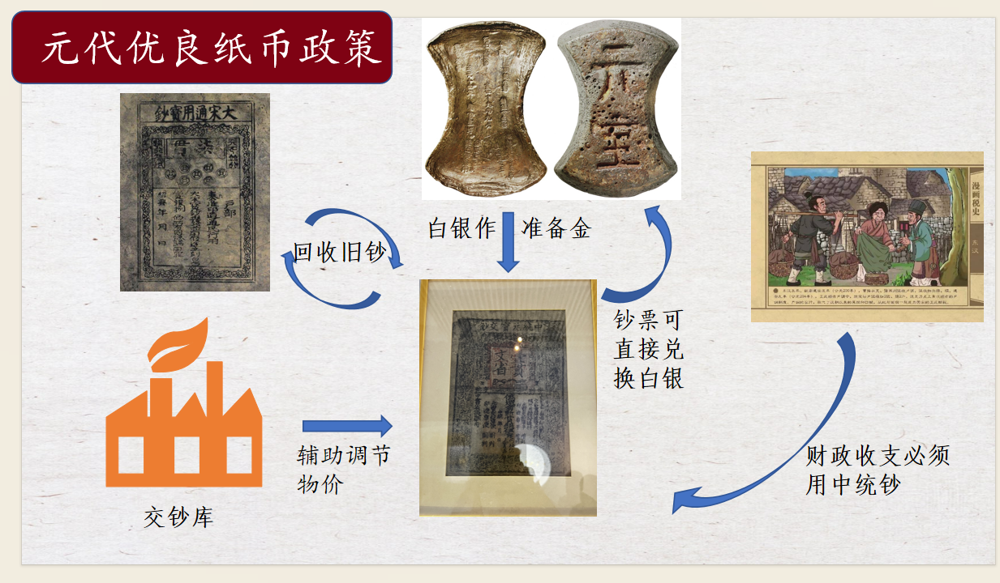

纸钞统一（元）
元朝（公元 1271 年至 1368年）是中国历史上第一个由少数民族建立的大一统王朝，其货币制度以纸币为主，铜钱为辅。元朝钱币的特点是铸钱较少，纸币流通广泛。元朝的纸币称为“钞”。

元代优良纸币政策:

1.实施强制手段，用新钞把之前的旧钞给收回来。
2.用白银做准备金，朝廷发行多少纸币，就要有多少准备金，这样对纸币的发行和流通进行有效地控制，此种规定就是货币制度中的“金本位”。
3.规定中统钞可以直接兑换白银，而且还规定纸币与白银兑换的比例，更是允许使用中统钞在市场上自由买卖金银。
4.规定朝廷的财政收支必须用中统钞结算，目的是回笼货币。
5.规定朝廷要通过财政的预算对中统钞的发行额度进行有效地控制。
6.在各路设置平准行用交钞库，目的是适时调节物价，辅助纸币制度正常有序进行
元朝纸钞没落原因:
1.元朝上下一直处于政治混乱的状态，对发展方向摇摆不定：是继续走成吉思汗的征伐之道还是走中原王朝的发展之路。
2.四大附属汗国不仅没有发挥拱卫的作用，反而经常给宗主国元朝制造麻烦。
3.元朝本土的王公大臣还骄奢淫逸，纵情挥霍，大肆搜刮。
4.作为官员自己不遵法反而各种鱼肉百姓；例如把各路钞库用来做纸币准备金的金银全部调到京都，导致民众对纸币不信任。